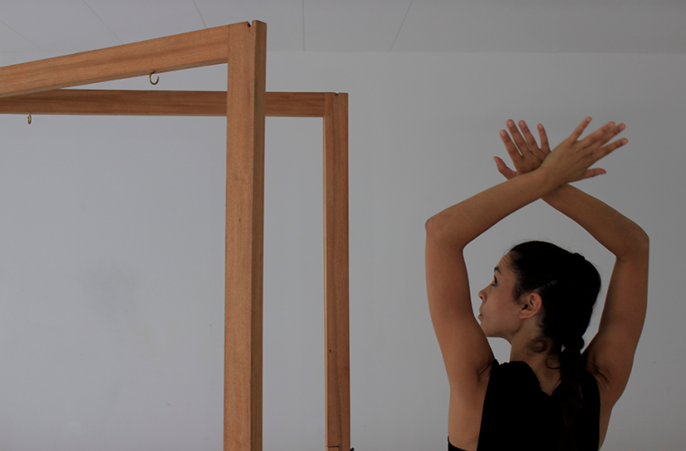
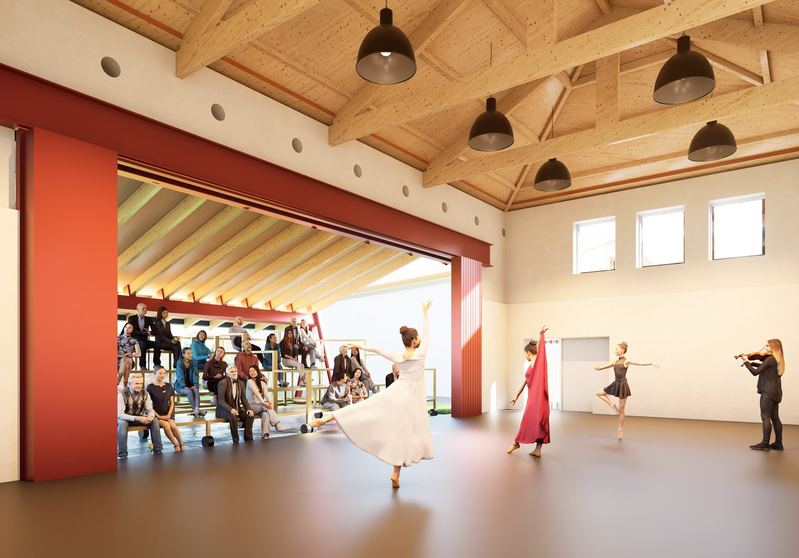
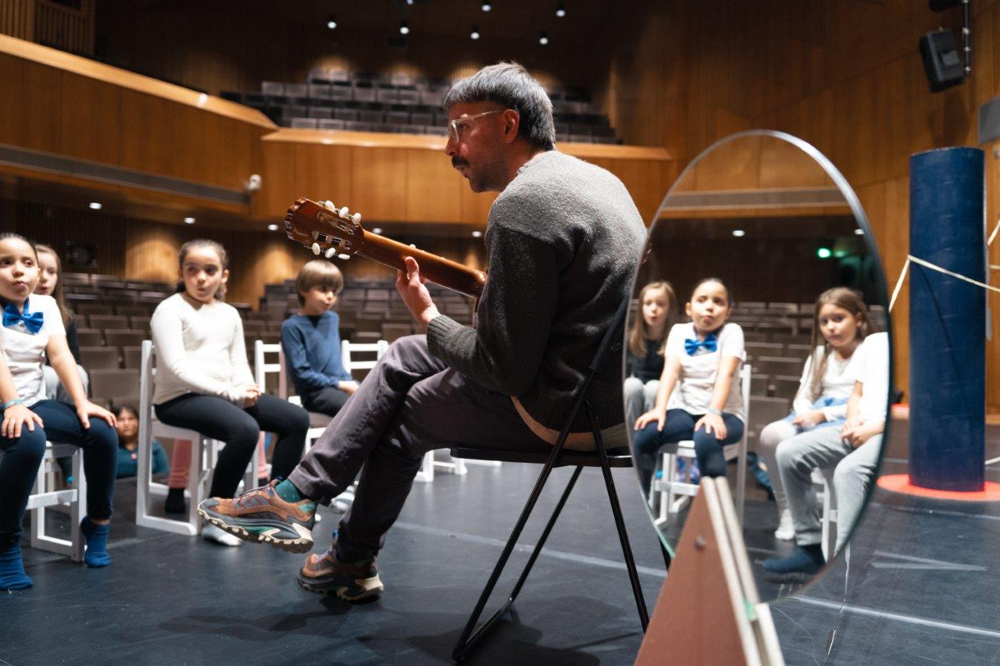
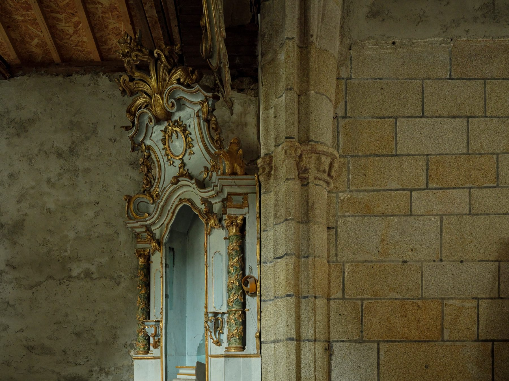
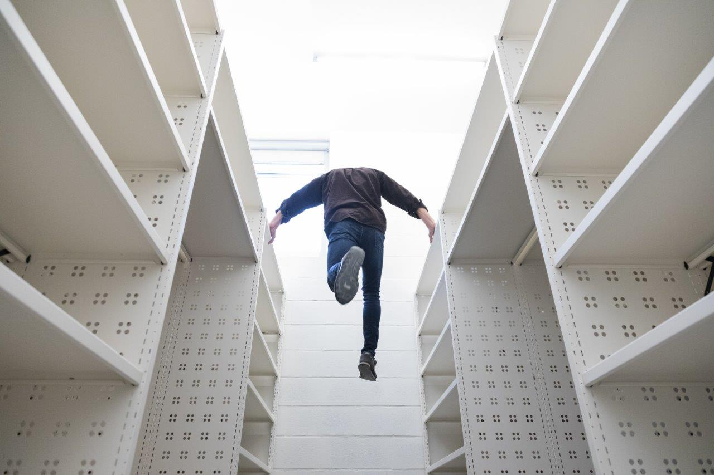

eventos
concluídos
Próximos
concluídos
Calendário
Todos os projetos
Próximos · concluídos · calendário · projetos
concluídos
Próximos · concluídos · calendário · projetos

Aulas regulares, residências artísticas, apoio à criação... Palco e igreja preparadas para todo o tipo de espetáculos, eventos culturais ou workshops. Artes para a comunidade e uma comunidade para as Artes!
Divulgamos projetos artísticos no estúdio/palco e na igreja.
Apoio à criação no antigo complexo da Igreja de Retorta.

Aulas regulares “a Sineirinha”, inscrições abertas! Até aos 14 anos.
Dança, música, teatro, arquitectura, artes plásticas e artes visuais. Programas para bebés, crianças, jovens, adultos e séniores.
Residências artísticas com alojamento no próprio complexo, para quem precisa de tempo e de espaço para criar.
Apresentação - criação - formação - residências

Quem somos, onde estamos e como falar connosco: tudo o que há para saber sobre a Sineira.
Sobre nós - acessos - contactos

Faz parte do futuro e apoia a Arte em Comunidade!
Torna-te um “Amigo da Sineira”
Espetáculos gratuitos - descontos - conteúdo exclusivo

Merchandising à venda.
Brevemente.
Tote bags - t-shirts - bonés - muito mais